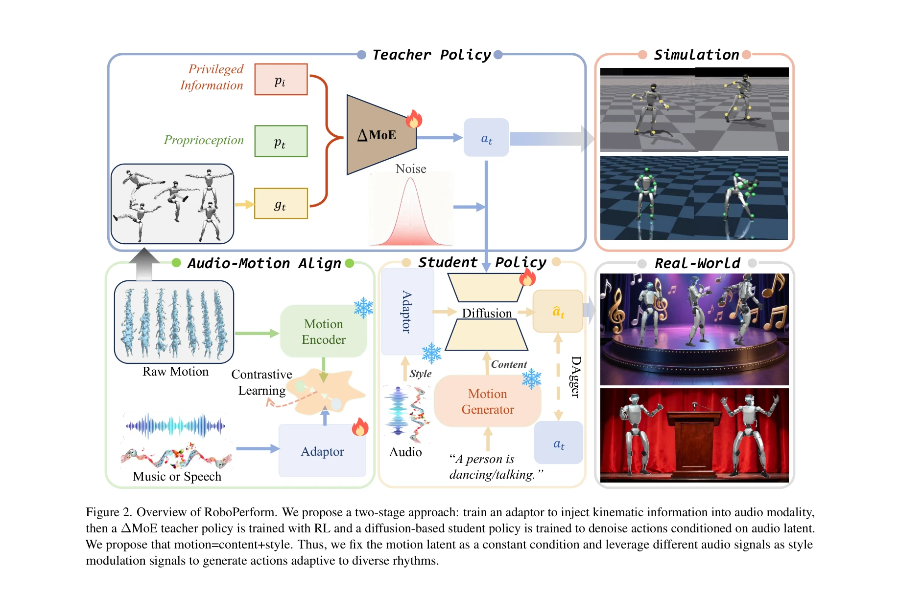

Essence

Figure 1.
RoboPerform은 오디오를 직접 제어 신호로 사용하여 음악에 맞춰 춤을 추거나 음성에 맞춰 제스처를 생성하는 휴머노이드 로봇 제어 프레임워크로, 명시적 모션 재구성을 제거하여 저지연 및 고충실도를 달성한다.
저자: Zhe Li, Cheng Chi, Yangyang Wei, Boan Zhu, Tao Huang, Zhenguo Sun, Yibo Peng, Pengwei Wang, Zhongyuan Wang, Fangzhou Liu, Chang Xu, Shanghang Zhang | 날짜: 2025-12-29 | URL: https://arxiv.org/abs/2512.23650
Figure 1.
RoboPerform은 오디오를 직접 제어 신호로 사용하여 음악에 맞춰 춤을 추거나 음성에 맞춰 제스처를 생성하는 휴머노이드 로봇 제어 프레임워크로, 명시적 모션 재구성을 제거하여 저지연 및 고충실도를 달성한다.

Figure 2. Overview of RoboPerform. We propose a two-stage approach: train an adaptor to inject kinematic information int
Figure 2. Overview of RoboPerform. We propose a two-stage approach: train an adaptor to inject kinematic information int
총평: RoboPerform은 오디오 제어 신호를 휴머노이드 로봇 모션에 직접 통합하는 novel한 접근으로, retargeting-free 설계와 content-style decomposition을 통해 저지연 고충실도 실시간 성능을 달성한 의미 있는 기여이다. 다만 실제 로봇 배포 및 sim-to-real 검증이 추가되면 실용성이 더욱 강화될 것이다.